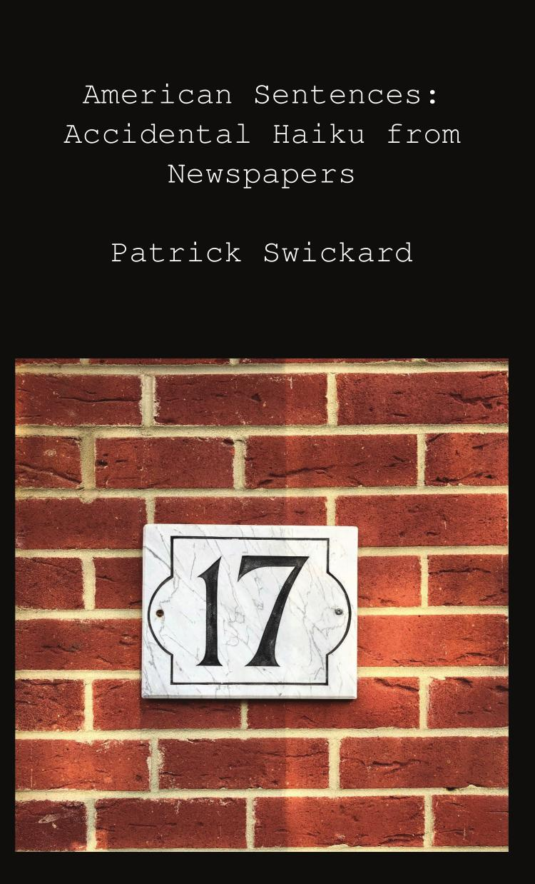
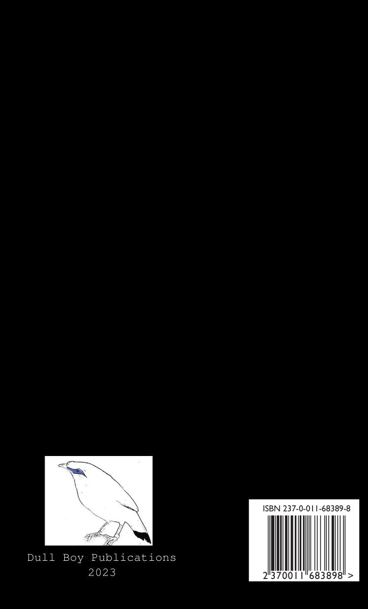

American Sentences: Accidental Haiku from Newspapers
Patrick Swickard
5"x8" paperback, 220 pages
They only want you when you're seventeen,
When you're 21, you're no fun.
They take a Polaroid and let you go
Say they'll let you know, so come on.
- Ladytron
The haiku is one of the first and freest forms of verse taught to kids. Three lines, seventeen syllables, 5-7-5, doesn’t have to rhyme. Any child who can count can write one, a nice way to inspire young minds. Much easier to write than more elaborate forms such as the sonnet. But still enough rules to distinguish it from prose or from wild free verse. Just enough constraints to keep young poets coloring inside the lines. And just the right length for one to express a single poetic thought.
Actually it’s rare for sentences to have seventeen syllables. Some thoughts are expressed in much shorter bursts of speech that fall short of this. Others ramble on, not to be expressed in such a succinct manner. Just the perfect length when one’s writing poetry, but awkward for prose. Still they do occur frequently out in the wild,waiting to be found.
I’m primarily a software developer writing Python code. Recently I wrote code which searches Wordpress sites with an API. Many newspapers use this to store and display all their articles. This makes all these news sources trivial to search for someone like me. I identified some five hundred newspapers using this software. I then wrote a script grabbing all the latest news articles from them. I ended up with fifty thousand articles from all these sources. I then parsed these all into individual sentences for fun. I combined this with an old script I had written using Ruby code. That script was used to count syllables with a special dictionary. I kept all the ones that contained exactly seventeen syllables. I found twenty five hundred of such sentences, diamonds in the rough. Many are mundane, some are poignant, some are weird, some hilarious.
Allen Ginsberg was a pioneer of finding beauty in these things. Ginsberg coined the term “American Sentences” for such sentences. His poetry book Cosmopolitan Greetings gave some examples. Ferlinghetti too was inspired by want ads in the newspapers. He claimed he could hear America singing in the Yellow Pages. I humbly submit all of these accidental haiku I have found. These words are not mine, each was written by someone not intending art. I hope you can find beauty somewhere in all this accidental verse.